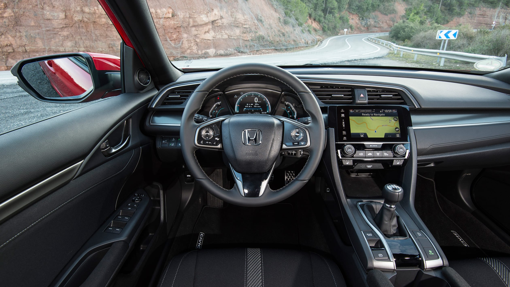
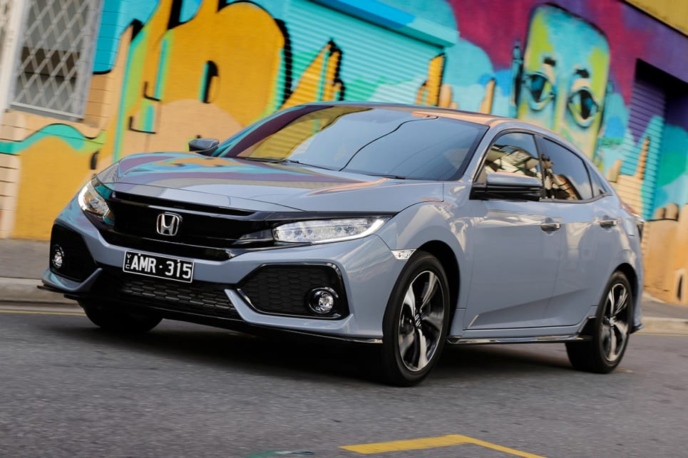
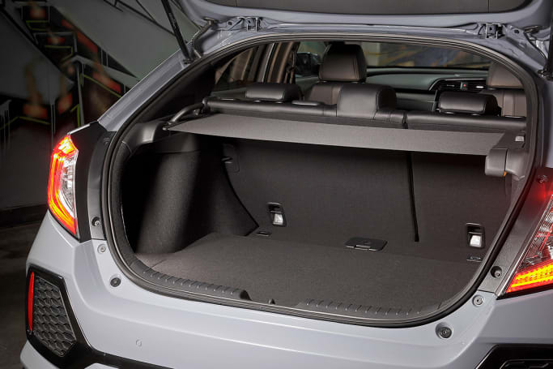
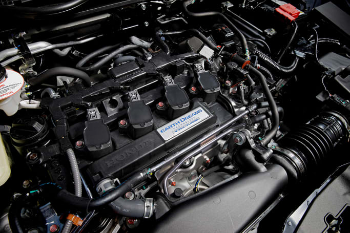

| Home | About us | Brands | Suvs | Sedans | Vans | Sports & Hatchbacks | Contact us |
Honda Civic 2017
See, this 10th-gen Civic might be the most important car Honda has ever made. While most manufacturers were pouring funds into their SUV ranges, Honda was diverting a huge chunk (heavily tipped to be a whopping 35 per cent) of their research and development budget into the Civic, using the evergreen nameplate as a key pin in their Australian comeback.
Thanks to what Honda refers to as its “One Civic” philosophy, this new hatch lineup perfectly mirrors the sedan range that was launched here last year, with the only major change being the ‘Ring-burning Type R, which will be hatch-only when it arrives later in 2017. And that means the five-strong Hatch range kicks off with the entry-level VTi ($22,390) before stepping up to the VTi-S ($24,490) and the VTi-L ($27,790). Next up is the sport-sprinkled RS ($32,290), before the range tops out with the high-flying VTi-LX ($33,590). Entry-level shoppers will make do 16-inch steel wheels, fabric seats and single-zone climate control, but there are some nice and premium-feeling flourishes, like LED DRLs, a 7.0-inch touchscreen that’s now Apple CarPlay and Android Auto-equipped and a second colour screen in the driver’s binnacle for your trip information.

Stepping up to the VTi-S adds 16-inch alloy wheels, integrated LED indicators in your wing mirrors and proximity locking and unlocking, along with some clever safety stuff we’ll come back to under the Safety heading. Along with a better engine (more on that in a moment), springing for the VTi-L will earn you 17-inch alloy wheels, twin-zone climate control and automatic windows in both rows, while the sporty-flavoured RS adds LED fog and headlights, along with a hearty dose of sporty styling courtesy of a bumper kit, skirting and a liberal splashing of piano black highlights. Inside the RS gets leather trimmed seats, a better 10-speaker stereo and and a standard sunroof, too. Finally, the range-topping Civic - the VTi-LX - gets satellite navigation, and a fairly comprehensive suite of safety kit.

The word 'polarising' is usually a thinly disguised way of saying 'lots of people don’t like it'. And the all-new Civic sedan was, well, very polarising. A glance at this new hatch version shows it hasn’t strayed too far from that design approach, either. It’s as understated as a snakeskin suit in all grades, but nowhere is it quite so busy as in the RS trim level, in which the sporty trimmings jump out from every possible angle. Strangely, though, we quite like the way it looks, and it's undeniably an individual in the small car segment. Inside, Honda has produced the comfortable and tech savvy interior that was missing from the outgoing model, but the sense of well executed semi-premium fades as you approach the spartan rear seat.

The Civic hatch is surprisingly spacious in the cabin, where up front the two seats are split buy a central bin housing two of the fattest, deepest cupholders we’ve ever seen (that would be America’s 'Big Gulp' influence on the Civic’s design), along with a hidden USB and power source that sits behind the centre console, hiding the ugly chords while you’re plugged into touchscreen unit. The back seat, is plenty spacious in the longer and wider hatch - which also sits on a 30mm longer wheelbase than the outgoing car - with more shoulder, leg and knee room for backseat riders. Which is just as well, as there’s not much else happening back there, with no air vents, power outlets or USB points on offer, with just the two cupholders housed in a pulldown divider that separates the rear seat. Boot space is pegged at 414 litres with the 60/40 split rear seat in place, which is enough to give the Civic hatch the edge over its direct competitors in the Hyundai i30, VW Golf and Mazda3.

Like the sedan version, there are two engine choices on offer, with the cheaper option a 1.8-litre petrol engine, good for 104kW at 6500rpm and 174Nm at 4300rpm found in the VTi and VTi-S trim levels. The better option, though, is a perky turbocharged 1.5-litre petrol engine that will push 127kW at 5500rpm and 220Nm at 1700rpm to the front tyres. Both engines are partnered with a CVT automatic transmission, with or without wheel-mounted shifters, depending on the trim level. Fuel use is pretty impressive across the board, with the 1.8-litre engine sipping a claimed combined 6.4-litres per hundred kilometres, while the turbocharged version needs just 6.2 litres on the same cycle. Emissions are pegged at 150 and 142 grams per kilometre of C02 respectively.
Honda struggles a little in explaining exactly what its new 1.5-litre turbo-powered Civic is. Is it a hot hatch? Nope, the incoming Type R will handle those duties. Oh, so it's a warm hatch, then? Not really - it's mechanically identical (same engine, gearbox and suspension) to the other, top-tier Civics. In fact, only the brand of tyres seperate the RS from the more luxurious VTi-LX. "We would say it's a 'sporting hatch'," says Honda's head honcho, Stephen Collins. And sporting it is, with its clever turbocharged 1.5-litre engine a willing and perky unit, delivering plenty of oomph all over the rev range and with no noticeable, soul-destroying lag in its power delivery. The steering, too, has a sporty flavouring, it's super direct, and offers such crisp direction changes that you have to pay keen attention driving, as even the slightest input will see you steering out of your lane. And while the ride is a little crashy through bumps, it pays you back with composed cornering antics that see the front wheels hanging on to the tarmac for much longer than you might expect. But the best trick of the 1.5-litre engine is that it doesn't require much accelerator to make it move, which means there's never too much strain on the CVT auto in town. And, given the auto is both loud and intrusive when you ask too much of it, that can only be a good thing. Like most CVT 'boxes, it's quiet and composed in city driving, but loud and with a tendency to surge when you start to test it. So much so that heavy acceleration requires a kind of lucky dip as to when to back off the throttle, with the Civic continuing to accelerate for a moment or so even once you get off the gas. Happily, then, the 1.8-litre models are much easier to classify. They're the cheap ones. It's a a simple, honest and hardworking engine that feels both slower and slower to respond than its newer, turbocharged sibling, but is more than capable of getting up to speed, even if it struggles to add pace from the mid-range onward.
While some of its key competitor are throwing safety functions at all trim levels, with Honda it’s still sadly a case of you get what you pay for. The entry-level VTi, for example, makes do with six airbags (front, front-side and curtain) and a 180-degree reversing camera, opting for the VTi-S, VTi-L or RS adds front and rear parking sensors and Honda’s cool 'LaneWatch' (with activates a side-mounted camera when you indicate, beaming an image of the lane running alongside the lefthand-side of the car up onto the 7.0-inch screen). Spring for the top-spec VTi-LX, however, and Honda’s complete 'Sensing Suite' arrives as standard, adding AEB, Lane Departure Warning with Lane Keep Assist and active cruise control. The entire Civic range was awarded the maximum five-star ANCAP safety rating.
Energetic and engaging (if not quite sporty), the Civic hatch is quiet and comfortable around town, but it can more than hold its own on a twisting backroad, too. It’s looks will either appeal or not, but a lack of comprehensive safety equipment on the cheaper models is sure to ruffle some feathers. For us, the cheapest way into the turbocharged engine forms the pick of the bunch, so we'd call the VTi-L the sweet spot.